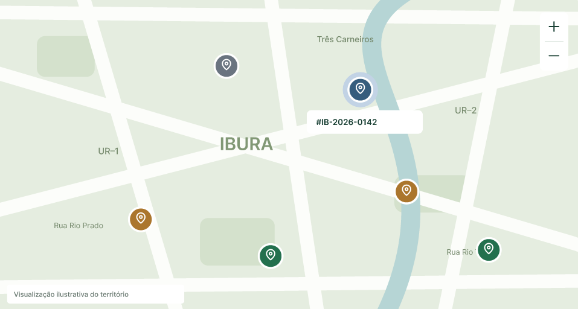

Início / Ocorrências
O que acontece no nosso bairro.
Consulte os registros de descarte irregular e acompanhe cada etapa do atendimento.
MAPA PÚBLICO
Sem dados pessoais. Com mais transparência.
Ambiente demonstrativo · Os registros são fictícios e o mapa é esquemático, sem precisão geográfica.
Buscar local ou protocolo
Status
Tipo de resíduo
Período
6 ocorrências de exemplo no Ibura
Selecione um ponto para ver os detalhes

Recebida
Em análise
Em atendimento
Resolvida
#IB-2026-0142
Em atendimento
Resíduos próximos
ao canal
Canal Três Carneiros · Ibura
Resíduos em canal · Prioridade alta
ANDAMENTO
Recebida
19 nov. · 08:42
Em análise
19 nov. · 10:15
Em atendimento
20 nov. · 09:30
Ver histórico completo
Identidade do denunciante protegida
Ocorrências do bairro
Acompanhe os registros e a situação de cada local.
PROTOCOLO
OCORRÊNCIA / LOCAL
REGISTRADA EM
STATUS
PRIORIDADE
#IB-2026-0142
Resíduos próximos ao canal
Canal Três Carneiros
19 nov. 2026
Em atendimento
Alta
#IB-2026-0141
Descarte em via pública
Rua Rio Prado
18 nov. 2026
Em análise
Normal
#IB-2026-0140
Acúmulo de resíduos na calçada
Rua Rio Tapado
17 nov. 2026
Resolvida
Normal
#IB-2026-0139
Descarte de móveis
UR-2 · Ibura
16 nov. 2026
Recebida
Normal
#IB-2026-0138
Resíduos junto ao canal
Três Carneiros · Ibura
15 nov. 2026
Em análise
Alta
#IB-2026-0137
Descarte de resíduos domésticos
UR-1 · Ibura
14 nov. 2026
Resolvida
Normal
Mostrando 1–6 de 6 ocorrências de exemplo
1
Já fez uma denúncia?
Consulte o andamento usando o número do seu protocolo.